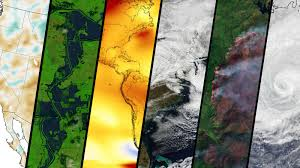

Extreme Weather Patterns Observed Worldwide
Scientists are observing unprecedented extreme weather patterns across the globe, raising concerns about the impacts of climate change. From record-breaking heatwaves and severe storms to prolonged droughts and intense flooding, these events are becoming increasingly frequent and severe. "We are seeing clear signs of a changing climate," said a climate scientist.
In recent months, several regions have experienced extreme weather events that have caused significant damage and disruption. For instance, a powerful hurricane recently struck the southeastern United States, leaving a trail of destruction in its wake. "This hurricane was one of the most intense we’ve seen in decades," said a meteorologist. "It caused widespread flooding and damage."
In Europe, a prolonged heatwave has led to severe drought conditions, impacting agriculture and water supplies. "We’re dealing with extreme temperatures that are affecting our crops and water resources," said a farmer. "It’s a tough situation."
Asia has also faced its share of extreme weather, with heavy monsoon rains causing devastating floods in several countries. "The floods have displaced thousands of people and caused extensive damage," reported a local official. "It’s a humanitarian crisis."
These events have prompted urgent calls for action to address the root causes of climate change. "We need to take immediate steps to reduce greenhouse gas emissions and increase resilience to these impacts," said an environmental advocate. "The time for action is now."
Governments and organizations around the world are responding with various initiatives to mitigate and adapt to climate change. Efforts include transitioning to renewable energy sources, implementing sustainable agricultural practices, and investing in infrastructure to withstand extreme weather. "We must work together to build a more sustainable and resilient future," said a policy maker.